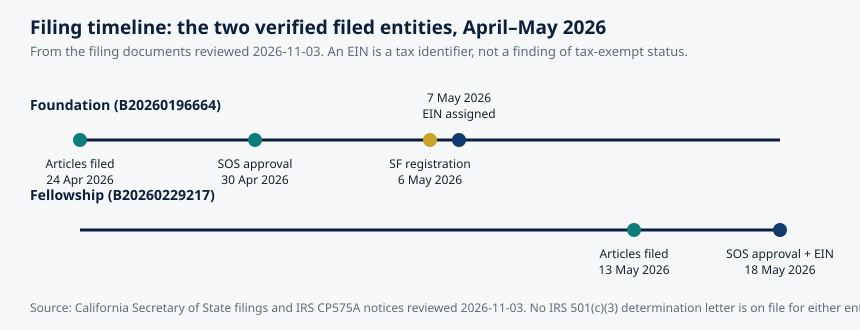

Article 58 · Locator.X · AGI Future Foundation
Your Location Is You: Privacy, Consent, and the Law of Where You Are
This article is about location privacy: what location data reveals, what the law says about it, and what consent has to mean for it to count. The facts in it come from published research, decided court cases, regulator enforcement actions, and the companies' own announcements.
Chart: the two verified filed entities. Source: California Secretary of State filings and IRS CP575A notices reviewed 2026-11-03. No IRS 501(c)(3) determination letter is on file for either entity.
What is true, and what is not yet true
This article is about location privacy: what location data reveals, what the law says about it, and what consent has to mean for it to count. The facts in it come from published research, decided court cases, regulator enforcement actions, and the companies' own announcements.
Here is what is not yet true. Locator.X has no verified location-data policy, no verified collection of any kind, no verified partner, user, or Steward Council, and this article does not invent any of those things. The series is a name and a number in an internal list, a planned focus on location, finding, and navigation, and an anchored metaverse fabric at 21.097, 142.693 whose definition is published but whose assets are not yet hosted. The privacy failures and legal rules described here are real, and they are the reason a location series must write its rules before it collects anything. The last section of this article is explicit about what the Foundation would have to put in place before Locator.X could honestly collect a single location from a single person.
1. Four points are enough
The most important fact in location privacy is also the most counterintuitive: you do not need much location data to identify a person. You need very little.
In 2013, researchers Yves-Alexandre de Montjoye, César Hidalgo, Michel Verleysen, and Vincent Blondel published a study in Scientific Reports that has become the foundation of the field. They studied fifteen months of human mobility data for one and a half million individuals, from a mobile carrier, with locations recorded hourly at the resolution of the carrier's antennas. Then they asked a simple question: how many randomly chosen points from a person's trace does an attacker need to pick that person out of the crowd?
The answer was four. Four spatio-temporal points, chosen at random, were enough to uniquely identify 95 percent of the individuals in the dataset. The uniqueness falls only slowly as the data gets coarser: even at a resolution of five hours and five antennas, four points still identified more than half the traces.
That finding destroys the most common reassurance in the location business, which is that data is safe because it has been "anonymised". Removing names and account identifiers does not make the people in a location dataset anonymous, because the pattern of movement is itself an identifier. Your home, your workplace, and your regular route between them belong to you in a way almost no one else shares. The study is more than a decade old, and its data was coarse by today's standards. Modern location data is far more precise and far more frequent, so the uniqueness measured then is, if anything, an underestimate now.
2. What location reveals
A location trace is not a list of coordinates. It is a diary, written in places instead of words. Where you sleep at night reveals where you live. Where you spend your working hours reveals where you work. The places you visit regularly reveal your routines: the gym, the school run, the place of worship, the clinic. The places you visit once reveal the exceptions: the hospital, the lawyer's office, the protest, the job interview. Put the two together, the routine and the exception, and you have a picture of a life more intimate than most people would ever write down.
The point is not hypothetical. In November 2017, the fitness app Strava released a global heatmap built from its users' public activities, aggregated from more than a trillion GPS points. On January 27, 2018, Nathan Ruser, a twenty-year-old Australian student studying international security, noticed that the heatmap made military bases clearly identifiable: in Syria, Afghanistan, and other places where almost no civilians were active, the jogging routes of soldiers lit up the map. The Guardian reported that zooming in on one of the larger bases clearly revealed its internal layout, as mapped out by the tracked jogging routes of numerous soldiers. The heatmap contained no names and no individual runs. It did not need them. The pattern was enough.
The lesson repeated itself. In October 2024, the French newspaper Le Monde reported that it had identified 26 members of the United States Secret Service, 12 members of France's GSPR, and six members of Russia's FSO through their public Strava accounts, and had tracked their runs to locations where the American and French presidents travelled before those trips were announced.
These are the dramatic cases. The ordinary ones are more common. A location trace reveals a pregnancy before it is announced, because the visits to a clinic start. It reveals a religious conversion, because the place of worship changes. It reveals a divorce, because one address becomes two. It reveals a job loss, because the workplace stops appearing. None of these inferences requires a name attached to the trace.
3. The courts: Carpenter and the 127 days
The most important location privacy case in American law is Carpenter v. United States, decided by the Supreme Court on June 22, 2018. It established the principle everything else builds on: your movements, recorded over time, are yours, and the government needs a warrant to get them.
Timothy Carpenter was suspected of a string of armed robberies in Michigan and Ohio. Investigators obtained his historical cell-site location information under a court order issued under the Stored Communications Act, which required only "reasonable grounds" to believe the records were relevant to an investigation, a much lower standard than the probable cause a warrant requires. The carriers produced 127 days of records, containing 12,898 location points, an average of 101 data points per day. The carriers produced 127 days of records, containing 12,898 location points, an average of 101 data points per day. Prosecutors used the records at trial to show that Carpenter's phone was near four of the robbery locations at the time those robberies occurred. He was convicted, and the Sixth Circuit affirmed.
The Supreme Court reversed, five to four, in an opinion written by Chief Justice Roberts. The Court held that the government's acquisition of Carpenter's cell-site records was a search under the Fourth Amendment, and that the government generally must obtain a warrant supported by probable cause before accessing historical cell-site location information. The reasoning turned on the character of the data: historical cell-site records give the government near-perfect surveillance, allowing it to travel back in time to retrace a person's whereabouts, and the Court described the information as deeply revealing, in its depth, breadth, and comprehensive reach, and in the inescapable and automatic nature of its collection. The third-party doctrine, the rule that information held by a third party falls outside Fourth Amendment protection, did not apply, because a person does not meaningfully share their movements with a carrier. The phone generates the records automatically, whenever it is on.
The Court drew a line: accessing seven days or more of historical location records was the kind of extended period that triggers Fourth Amendment protection, with exceptions for emergencies such as bomb threats, active shootings, and child abductions. The principle was set: the government cannot obtain a comprehensive chronicle of your movements without a warrant, even if the records sit with a company rather than with you.
Carpenter was about cell-site records, which are coarse. The location data in a modern phone is far more precise, and the Court's reasoning applies with greater force to it, not less.
4. Geofence warrants: asking for everyone who was there
A geofence warrant turns the traditional search inside out. Instead of identifying a suspect and then seeking evidence about them, investigators draw a boundary around a place and a time, and ask a company for the location data of every device that was inside it. The technique is sometimes called a reverse warrant, because it works backwards from the ordinary process.
Google was the company that received almost all of them, because Google held the database: Location History, the record behind Google Maps Timeline, covering hundreds of millions of users. Google reported at one point that geofence warrants made up 25 percent of all the warrants it received each year. In August 2021, Google published a rare state-by-state breakdown: from 2018 to 2020, California agencies alone sent Google 3,655 geofence warrants, about 17.5 percent of the national total of 20,932.
The legal fight over geofence warrants split the courts. In August 2024, the Fifth Circuit held in United States v. Smith that geofence warrants are unconstitutional general warrants, categorically prohibited by the Fourth Amendment, because answering one required Google to search the location data of everyone in an area rather than a particular person. The Fourth Circuit went the other way in United States v. Chatrie, with an evenly divided en banc court leaving the conviction in place. The Supreme Court agreed to hear Chatrie in January 2026, heard argument in April 2026, and decided the case on June 29, 2026, holding that obtaining a person's Location History from Google is a Fourth Amendment search. The Court did not decide whether the particular warrant in the case satisfied the Fourth Amendment's requirements of particularity and probable cause; that question was sent back to the Fourth Circuit.
By the time the Court ruled, the database at the centre of the case no longer existed in the form police had used. In December 2023, Google announced that Timeline would be stored on each user's device rather than on Google's servers, that backups would be encrypted so that Google itself could not read them, and that new users would get a three-month auto-delete default instead of eighteen months. The migration finished in mid-2025: Google told the Supreme Court in a brief filed in March 2026 that, as of July 2025, all Location History data previously stored on its servers had been deleted or migrated to on-device storage, and that Google could no longer respond to geofence warrants based on Location History data. The change was a product decision, not a legal one, and it closed the largest single source of geofence data in the world. It did not close the others. The Electronic Frontier Foundation's summary is the honest one: mass geofence searches of Google users' location data have not been possible since July 2025, but Google is not the only company collecting location data.
There is a detail in the Chatrie record that shows how much more revealing this data is than the cell-site records in Carpenter. The Location History at issue was accurate to about 20 metres and logged roughly 720 points a day, against 101 points a day in Carpenter: seven times as many points, five times as precise.
5. The regulators: the data brokers
In the last four years, the Federal Trade Commission has built a line of enforcement cases that amounts to a new rule for location data: selling precise location data without real consent is an unfair practice, and the penalty is a ban.
The line began with Kochava, an Idaho-based mobile advertising and attribution company. In August 2022, the FTC sued Kochava, alleging that it collected and sold precise geolocation data from hundreds of millions of mobile devices, data that could be used to track people to reproductive health clinics, places of worship, and domestic abuse shelters. Kochava responded by suing the FTC, challenging the agency's authority. The district court first dismissed the case, then allowed the FTC to amend its complaint, then refused to dismiss the amended complaint. In May 2026, the two sides settled: Kochava and its subsidiary Collective Data Solutions agreed not to sell, license, transfer, or disclose precise location data unless they have the consumer's affirmative express consent and the data is used to provide a service the consumer directly requested. The settlement carries five years of FTC oversight, shorter than the twenty-year terms in the other cases in the sweep, but the core term is the same: no sale without real consent.
While the Kochava case was running, the FTC moved against the rest of the industry. In 2024, the agency banned data brokers InMarket Media, Outlogic, formerly X-Mode Social, Gravy Analytics, and Mobilewalla from harvesting and selling Americans' location tracking data. The Gravy Analytics and Mobilewalla orders, announced in December 2024, are the sharpest of the set. The FTC alleged that Gravy, through its subsidiary Venntel, collected location data from ordinary mobile apps and sold access to it to other businesses and government agencies, and that Mobilewalla collected consumer information primarily from real-time bidding exchanges. Both companies were barred from selling, disclosing, or using sensitive location data in any product or service. The banned categories were specific: health clinics, religious organisations, correctional facilities, labour union offices, LGBTQ-related locations, political gatherings, and military installations. General Motors faced the same treatment for selling OnStar driving and location data to brokers: a $12.75 million California settlement and an FTC order requiring affirmative, express consent for twenty years.
The pattern across these cases is consistent. The FTC's theory is not that location data may never be sold. It is that precise location data is sensitive, that its sale without the person's knowledge or consent is unfair, and that the harm is not theoretical: the data can be used to track people to clinics, shelters, places of worship, and military bases, and it has been. The remedy the FTC keeps imposing is a ban on the sale, conditioned on affirmative express consent. A series that plans to handle location data should assume that this is the standard it will be held to, because it is the standard the law has settled on.
6. The statutes: what the law calls sensitive
The United States has no single federal privacy law. What it has is a patchwork, and location sits in the most protected part of it.
In California, where the Foundation is incorporated, the California Consumer Privacy Act, as amended by the California Privacy Rights Act, treats precise geolocation as sensitive personal information, alongside Social Security numbers, financial account credentials, racial or ethnic origin, religious beliefs, genetic data, biometric data, and health information. That classification carries concrete rights. A California consumer can direct a business that collects their sensitive personal information to limit its use to what is necessary to perform the services the consumer reasonably expects. The consumer can also opt out of the sale or sharing of their personal information entirely, and once they opt out, the business must wait at least twelve months before asking them to authorise the sale again. The California Privacy Protection Agency enforces the law, and the base penalty is up to $2,500 per violation, rising to $7,500 for intentional violations.
California also built a deletion mechanism for the broker economy. The California DELETE Act created the Delete Request and Opt-Out Platform, known as DROP, which launched on January 1, 2026 and begins enforcement on August 1, 2026. It gives Californians a single place to tell data brokers to delete their personal information and not to sell it.
In Europe, the General Data Protection Regulation treats location data as personal data, and the European Data Protection Board has been explicit that location data can reveal sensitive information about a person, including their health, their beliefs, and their movements.
The statutes share a structure, and the structure is the point. Location data is not ordinary data. It is sensitive data, in California by statute and in Europe by interpretation, and the law gives the person it describes rights over it: to know, to delete, to opt out, to limit, and to be asked first.
7. The controls on your phone
The law sets the floor. The phone sets the ceiling, or at least it tries to. The controls that exist on a modern phone are the practical answer to the question of what consent looks like when it is implemented in software.
Apple's system has three separate controls, and they do different things. Location Services governs whether an app can access location at all, and at what precision: an app can be given Never, Ask Next Time or When I Share, While Using the App, or Always, and the Precise Location toggle can be switched off, so that the app receives an approximate location, a variable radius of roughly four to twenty kilometres, instead of an exact coordinate. App Tracking Transparency governs whether an app can track the user across other companies' apps and websites, and it is an opt-in: the app must ask, and the user must say yes, before it can access the advertising identifier. Find My governs device finding and optional person-to-person sharing. Changing one does not automatically change the others. The most important of these is the precision toggle: most apps do not need a person's exact position.
Google's system moved in the same direction, more slowly and then all at once. Location History, the record behind Timeline, was off by default, but once enabled it was stored on Google's servers for eighteen months by default. In December 2023, Google announced that Timeline would be saved on the user's device instead of in the cloud, that backups would be encrypted so that Google itself could not read them, and that the auto-delete default for new users would fall from eighteen months to three. The migration finished in mid-2025. The effect is that Google no longer holds a central database of where its users have been, and therefore cannot hand it to anyone.
These controls are real, and they are also limited. Turning off Precise Location does not stop a carrier from knowing your rough location from cell tower pings, and it does not stop an IP address from revealing your general metropolitan area. Turning off tracking does not stop first-party tracking, where a single company tracks you across its own suite of apps.
8. What consent has to mean
Consent is the word the entire location economy runs on, and it is the word most often emptied of meaning. A location series that wants to do better has to decide what consent means to it, and then build a system that actually implements that meaning.
The FTC's settlements give the clearest standard available in the United States: affirmative express consent. Not a pre-ticked box. Not a buried paragraph in a terms of service. Not an "Allow" button tapped in a hurry. Affirmative express consent means the person said yes, in words, to this use, of this data, for this purpose, knowing what they were agreeing to. The Kochava and GM settlements both require it before the collection, use, or sharing of location data, and the GM settlement requires it for twenty years.
The statutes give the other half of the standard: consent must be revocable, and revocation must work. Under California law, a person who opts out must be left opted out, and a business must wait twelve months before asking again. Under the GDPR, consent can be withdrawn at any time, and withdrawing it must be as easy as giving it.
There are questions a location series should be able to answer, in writing, before it collects anything, and they are the same questions the Foundation's own site article on Locator.X lists as open. What is collected, from whom, with what consent, how precisely, how long it is kept, who can see it, and how a person opts out or deletes it. No such answer exists for Locator.X today.
The answers would have to be specific. "Location data" is not an answer. Is it GPS coordinates, or Wi-Fi positions, or both? Is it precise or approximate? Collected continuously, or only when the person asks for something? Stored on the device or on a server, and for how long? Who can see it, and how does a person delete it, in full, including from backups and from any third party it was shared with? A policy that does not answer these questions is not a policy. It is a paragraph.

9. What the Foundation would have to do first
The Foundation's own position makes the obligation sharper, not weaker. It is a filed California nonprofit public benefit corporation, Entity No. B20260196664, Articles filed 2026-04-24, SOS approval 2026-04-30, San Francisco business registration 2026-05-06, EIN assigned 2026-05-07. Its partner, the AGI Fellowship, is a filed California nonprofit religious corporation, Entity No. B20260229217, Articles filed 2026-05-13, SOS approval 2026-05-18, EIN assigned 2026-05-18. Neither has an IRS 501(c)(3) determination letter on file, so neither is recognised as tax-exempt, and no donation to either is presented as tax-deductible. The Foundation's Statement of Information was due on 2026-07-23 and is overdue.
The Foundation's intended governance model, described in the site article on Locator.X, is that a series is DAO-managed day to day, with agents operating routine work inside limits set in advance by humans, and a human Steward Council deciding everything that creates a legal, financial, or doctrinal consequence. Agents prepare proposals, analysis, drafts, and coordination. Agents never sign legal documents, never move funds, never hire or fire, never offer securities, and never enact doctrine or charters. Humans execute. For a location series, that division of labour has a specific consequence: the decision to collect a person's location, to keep it, to share it, or to delete it would be a human decision every time, by a named steward, on a written record.
The Foundation's public-benefit purpose is the other half of the obligation. Its purpose, as filed, is safe, equitable, and socially beneficial artificial intelligence. A location service that served everyone, everywhere, would be a surveillance service by another name, and the purpose would fail at the first question if the series collected location data without consent, kept it without limit, or shared it without a written rule. The Fiduciary Shield, the expanded business-judgment protection for benefit-considering decisions under California Corporations Code sections 14620 to 14621, protects a board that weighs safety and public benefit alongside returns. It does not protect a board that ignores the benefit purpose.
There is also a practical reason to get this right early. The Foundation's own agent programme, five agents listed in Virtuals ACP with 29 jobs and 6 subscriptions verified live, has no instance online to fulfil a hire. A location-aware service that depended on those agents could not be fulfilled today, and a location service that collected data in anticipation of a capability that does not yet exist would be collecting data for a purpose it cannot yet serve. That is the opposite of data minimisation.
The work, then, is sequential. First, the Foundation files what it owes, including the overdue Statement of Information. Second, it seats a Steward Council for the series, with named, consenting humans. Third, the Council writes the location-data policy, answering the questions this article lists, and publishes it. Fourth, and only fourth, does the series collect anything, from anyone, under that policy, with affirmative express consent, for a stated purpose, for a stated period, with deletion that works. Any other order is a promise made before the promisor exists.
Glossary
Cell-site location information (CSLI): Records created when a phone connects to a carrier's cell towers, showing which towers handled the device's communications at specific times, and allowing location to be inferred over time.
Geofence warrant: A court order requiring a service provider to turn over location data for every device that was inside a defined area during a defined time. Also called a reverse warrant, because it works backwards from identifying a suspect first.
Third-party doctrine: The legal rule that information a person shares with a third party, such as a bank or a carrier, falls outside Fourth Amendment protection. Carpenter held that it does not apply to historical cell-site location information.
Affirmative express consent: Consent given by a clear, positive act, to a specific use, with knowledge of what is being agreed to. The standard the FTC imposed in its Kochava and GM settlements for location data.
Data broker: A company that collects personal information, including location data, from many sources and sells it to other businesses or government agencies.
DROP: The Delete Request and Opt-Out Platform, created by California's DELETE Act, launched January 1, 2026, giving Californians a single place to tell data brokers to delete their personal information and not to sell it.
Frequently asked questions
No. De Montjoye's 2013 study showed that four randomly chosen points from a mobility trace uniquely identify 95 percent of people in a dataset of 1.5 million. Removing names does not remove identity, because the pattern of movement is itself identifying.
In the United States, the government generally needs a warrant supported by probable cause to obtain historical location records, under Carpenter v. United States (2018) for cell-site records and Chatrie v. United States (2026) for Location History obtained through a geofence request. There are exceptions for emergencies and for short periods. Google no longer holds Location History on its servers, so it cannot respond to geofence warrants based on it.
Under the CCPA as amended by the CPRA, you can know what personal information a business collects, request its deletion, opt out of its sale or sharing, and direct a business to limit its use of your sensitive personal information, including precise geolocation.
No. Locator.X is a proposed series, not a formed, funded, or operating one. It has no verified collection of any kind, no location-data policy, and no Steward Council.
Sources
- de Montjoye, Y.-A., Hidalgo, C. A., Verleysen, M., & Blondel, V. D., "Unique in the Crowd: The privacy bounds of human mobility," Scientific Reports 3, 1376 (2013) — four spatio-temporal points uniquely identify 95% of 1.5 million individuals.
- TechCrunch, "Fitness app Strava exposes the location of military bases" (Jan 28, 2018) — Nathan Ruser's heatmap finding.
- TechCrunch, "Strava says it will simplify privacy settings and review app features after exposing military bases" (Jan 29, 2018) — Strava's response.
- Undoleak, "Can Strava Show Where You Live?" (based on The Guardian, Associated Press, Le Monde, and Strava Support) — Le Monde's 2024 StravaLeaks investigation: 26 US Secret Service agents, 12 GSPR members, 6 FSO members identified through public Strava accounts.
- Carpenter v. United States, 585 U.S. 296 (2018) — full opinion: 12,898 location points over 127 days; acquisition of historical CSLI is a Fourth Amendment search requiring a warrant; seven-day line; emergency exceptions.
- State of Surveillance, "How Police Use Google to Find Everyone in an Area" — geofence warrant mechanics; Google's 25% figure; Fifth Circuit Smith (2024); Chatrie decided June 29, 2026; Google's July 2025 migration.
- SF Bay Area Times, "Google Location History No Longer Answers Geofence Warrants" — California's 3,655 geofence warrants 2018–2020; Google's March 2026 Supreme Court brief; Chatrie holding and remand.
- The Register, "Google shakes up Location History to limit geofence warrants" (Dec 15, 2023) — December 2023 announcement: on-device storage, three-month auto-delete default, encrypted backups.
- BleepingComputer, "FTC to ban data broker Kochava from selling Americans' location data" — FTC sued Kochava August 2022; May 2026 settlement: no sale of precise location data without affirmative express consent and a directly requested service.
- IAPP, "A view from DC: Kochava is not enough" — litigation history; settlement terms compared with XMode, InMarket, Gravy Analytics, Mobilewalla; five-year oversight term.
- The Verge, "Two data brokers banned from selling 'sensitive' location data by the FTC" (Dec 3, 2024) — Gravy Analytics, Venntel, and Mobilewalla orders; banned sensitive-location categories.
- SourcePoint, "GM and Kochava Face Major Consequences for Selling Consumer Data Without Consent" — California Attorney General's $12.75 million GM settlement; FTC's early-2026 GM/OnStar settlement; twenty-year consent requirement.
- Thomson Reuters, "Key aspects of the California Privacy Rights Act (CPRA)" — precise geolocation as sensitive personal information; right to limit; CPPA enforcement; DROP launch January 1, 2026.
- Foundation filing documents reviewed 2026-11-03 — AGI Future Foundation, California Nonprofit Public Benefit Corporation, Entity No. B20260196664, Articles filed 2026-04-24, SOS approval 2026-04-30, SF registration 2026-05-06, EIN assigned 2026-05-07; AGI Fellowship, California Nonprofit Religious Corporation, Entity No. B20260229217, Articles filed 2026-05-13, SOS approval 2026-05-18, EIN assigned 2026-05-18; no IRS 501(c)(3) determination letter on file for either; Foundation Statement of Information due 2026-07-23, overdue.
Goals served: foundation-funding (a serious, honest privacy article is the kind of public work that supports the Foundation's fundraising case and its credibility as a steward); foundation-governance (the article states what the Foundation must do before collecting location data); corporate-safe (the article keeps filed fact and intended plan visibly apart, and states the overdue Statement of Information plainly).